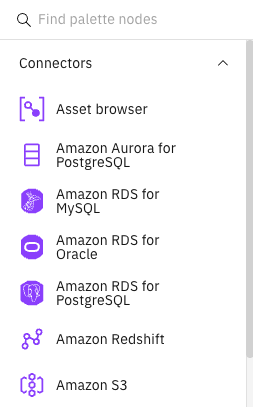

Stages#
A stage is a part of a flow responsible for processing the flow’s data in a single, simple way. By connecting multiple stages together, you can perform complex tasks.
- The SDK provides many ways to interact between a flow and its stages:
Adding a stage to a flow
Connecting stages
Editing a stage’s configuration
Adding a Stage to a Flow#
To add stages to a flow in the UI, you can open the dropdown menu on the left of the flow edit page and select the stage you want to add.
{kind=link}
In the SDK, you can use the BatchFlow.add_stage() method.
This method takes in the stage’s official type and the label for that stage. The type is the unique identifier for that stage and the label is the name you wish to give it.
This method returns the newly created stage.
>>> amazon_rds = batch_flow.add_stage(type = 'Amazon RDS for PostgreSQL', label = 'Amazon RDS')
>>> project.update_flow(batch_flow)
<Response [201]>
You can find a list of all unique identifiers here: BatchFlow.add_stage()
Connecting Stages#
In the UI, to connect stages, you can click on the output of a stage and drag it to another stage.

In the SDK, to connect batch stages to each other we can use the Stage.connect_output_to() method.
This method connects two stages and returns the created link between them.
>>> row_gen = batch_flow.add_stage('Row Generator', 'Row_Generator') # a sample origin stage that generates data
>>> peek = batch_flow.add_stage('Peek', 'Peek') # a sample destination stage that outputs all input to console
>>> link = row_gen.connect_output_to(peek)
Editing a Stage’s Configuration#
All stages have properties which can be configured.
You can edit a stage’s configuration through its corresponding configuration property.
This property returns an object containing all of that stage’s properties. The object has a class corresponding to the stage’s class.
>>> row_gen.configuration
row_generator(buf_mode=<BufMode.default: 'default'>, max_mem_buf_size=3145728, ...)
>>> row_gen.configuration.records = 5
>>> row_gen.configuration.runtime_column_propagation = False